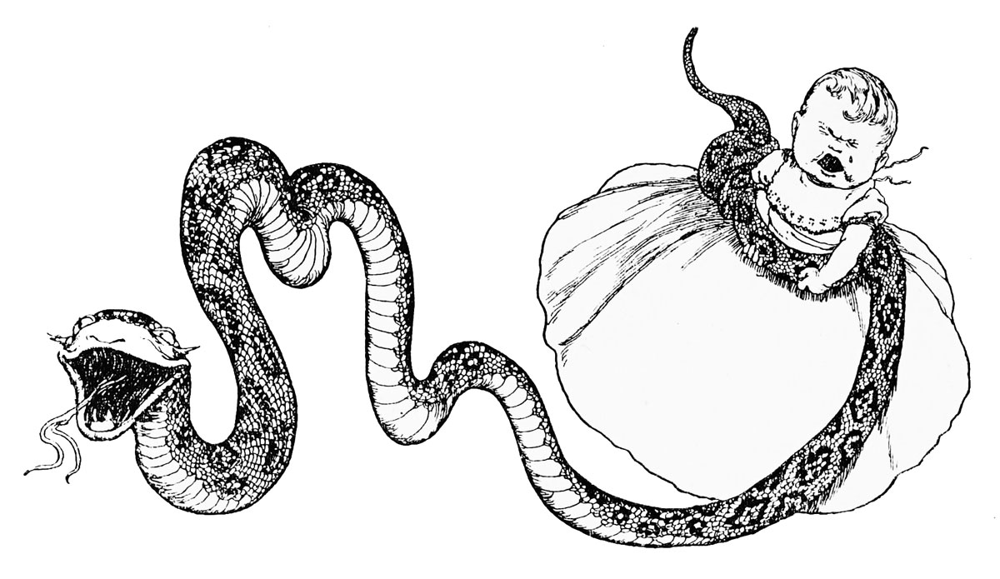
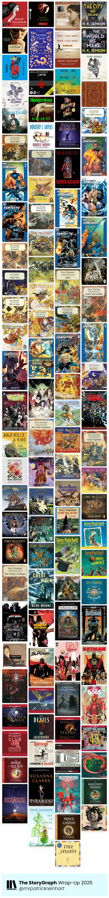

In 2025 I read 107 books. According to StoryGraph, that amounted to 4,721 pages and 795.97 hours listened. Similar to 2024, I read most during the summer, and much less come the end of the year. Odd that; I would've thought I'd be reading more when it's darker and colder and am staying inside. It's not as if I take summers off and spend my days reading by the beach: actually I spent the year working nights in an industrial warehouse listening to audiobooks (and working, too). Or maybe it's because I read more comics and graphic novels.
This was the year of The Great Discworld Re-read! Thus the works of Terry Pratchett accounted for a full ~40% of what I read in 2025. There were a few in there I hadn't read before, and I wanted to make sure I don't miss out on any, so I just started from the second book—The Light Fantastic—went straight through chronologically by publication, and then read The Color of Magic. Reason being: I've read it a bunch of times, listened to the abridged but delightful audiobook read by Tony Robinson a bunch of times, and watched the BBC miniseries a couple times. I like Rincewind the Wizzard. Also, circling back to the first book after reading the other 41 gave me an appreciation for Pratchett's own journey of discovering his Discworld and gaining mastery of his craft. I may post more specifically about the Discworld later.
- January
- Daemon Voices by Philip Pullman
- Rebecca by Daphne Du Maurier
- A Room of One's Own by Virginia Woolf
- The City We Became by N.K. Jemisin
- February
- Stoner by John Williams
- The Wood at Midwinter by Susanna Clarke
- What I Talk About When I Talk About Running by Haruki Murakami
- The World We Make by N.K. Jemisin
- Beowulf: A New Translation by Maria Dahvana Headley
- Goldfinger by Ian Fleming
- There Are Rivers in the Sky by Elif Shafak
- March
- The Annual Migration of Clouds by Premee Mohamed
- We Speak Through the Mountain by Premee Mohamed
- Hungerstone by Kat Dunn
- The Ministry of Time by Kaliane Bradley
- The Apple-Tree Throne by Premee Mohamed
- April
- Assassin's Apprentice by Robin Hobb
- Whose Body? by Dorothy L. Sayers
- The Narrow Road Between Desires by Patrick Rothfuss
- The Light Fantastic by Terry Pratchett (and so the Discworld re-read begins!!)
- Equal Rites by Terry Pratchett
- Mort by Terry Pratchett
- Daredevil: Born Again by Frank Miller
- Ultimate Fantastic Four, Volume 1: The Fantastic by Brian Michael Bendis
- Ultimate Fantastic Four, Volume 2: Doom by Warren Ellis
- Sourcery by Terry Pratchett
- Ultimate Fantastic Four, Volume 3: N-Zone by Warren Ellis
- Ultimate Fantastic Four, Volume 4: Inhuman by Mark Millar
- Ultimate Fantastic Four, Volume 5: Crossover by Mark Millar
- Wyrd Sisters by Terry Pratchett
- Ultimate Fantastic Four, Volume 6: Frightful by Mark Millar
- Ultimate Fantastic Four, Volume 7: God Ward by Mike Carey, Pasqual Ferry
- Pyramids by Terry Pratchett
- Guards! Guards! by Terry Pratchett
- Eric by Terry Pratchett
- Moving Pictures by Terry Pratchett
- Reaper Man by Terry Pratchett
- May
- Witches Abroad by Terry Pratchett
- Small Gods by Terry Pratchett
- Lords and Ladies by Terry Pratchett
- Men At Arms by Terry Pratchett
- Soul Music by Terry Pratchett
- Ultimate Fantastic Four, Volume 8: Devils by Mike Carey, et al
- Ultimate Fantastic Four, Volume 9: Silver Surfer by Mike Carey
- Interesting Times by Terry Pratchett
- Maskerade by Terry Pratchett
- Feet of Clay by Terry Pratchett
- Hogfather by Terry Pratchett
- Ultimate Fantastic Four, Volume 10: Ghosts by Mike Carey, Mark Brooks
- Ultimate Fantastic Four, Volume 11: Salem's Seven by Mike Carey
- Jingo by Terry Pratchett
- Forever Evil by Geoff Johns
- Forever Evil: Blight by J.M. DeMatteis, Ray Fawkes
- Justice League Dark, Volume 1: In The Dark by Peter Milligan
- The Last Continent by Terry Pratchett
- June
- Carpe Jugulum by Terry Pratchett
- Anji Kills a King by Evan Leikam
- The Fifth Elephant by Terry Pratchett
- The Truth by Terry Pratchett
- Thief of Time by Terry Pratchett
- The River Has Roots by Amal El-Mohtar
- The Last Hero by Terry Pratchett
- The Amazing Maurice and His Educated Rodents by Terry Pratchett
- Night Watch by Terry Pratchett
- Monstrous Regiment by Terry Pratchett
- The Wee Free Men by Terry Pratchett
- A Hat Full of Sky by Terry Pratchett
- Going Postal by Terry Pratchett
- July
- Thud! by Terry Pratchett
- Wintersmith by Terry Pratchett
- Making Money by Terry Pratchett
- Unseen Academicals by Terry Pratchett
- I Shall Wear Midnight by Terry Pratchett
- Snuff by Terry Pratchett
- Raising Steam by Terry Pratchett
- The Shepherd's Crown by Terry Pratchett
- The Color of Magic by Terry Pratchett (so the Discworld reading saga ends where it all began...)
- The Great When by Alan Moore
- August
- Jerusalem by Alan Moore
- Absolute Batman, Volume 1: The Zoo by Scott Snyder
- Batman: White Knight by Sean Murphy
- Batman: Curse of the White Knight by Sean Murphy
- Batman: White Knight Presents: Harley Quinn by Katana Collins
- Batman: Beyond The White Knight by Sean Murphy
- The Count of Monte Cristo by Alexandre Dumas
- September
- Absolute Superman, Volume 1: Last Dust of Kryptonite by Jason Aaron
- A Wizard of Earthsea by Ursula K. Le Guin
- The New Gods, Volume 1: The Falling Sky by Ram V
- The Tombs of Atuan by Ursual K. Le Guin
- The Farthest Shore by Ursula K. Le Guin
- Tehanu by Ursula K. Le Guin
- October
- The Crying of Lot 49 by Thomas Pynchon
- The Other Wind by Ursula K. Le Guin
- November
- The Devils by Joe Abercrombie
- The Doors of Perception by Aldous Huxley
- Tales from Earthsea by Ursula K. Le Guin
- Fight Club by Chuck Palahnuik
- December
- Deathless by Catherynne M. Valente
- Supergirl: Woman of Tomorrow by Tom King
- The Magician's Nephew by C.S. Lewis
- The Horse and his Boy by C.S. Lewis
- Piranesi by Susanna Clarke
- Prince Caspian by C.S. Lewis
- Sculptor's Daughter by Tove Jansson
- Rose/House by Arkady Martine
- Art In Nature by Tove Jansson
- Fair Play by Tove Jansson
See the massive image below provided by StoryGraph with all the covers of the books. It's nifty. Discworld dominated April through July, the other books in those months being quick-read comics (with only two exceptions). You'll note that I also read through the Earthsea books by Ursula K. Le Guin. I hadn't read those last few, and I hadn't read that initial trilogy in a long time. Do not worry: it HOLDS UP. Those books are incredible. And short. And these days I appreciate an impactful, shorter book. I did read and appreciate Alan Moore's hefty Jerusalem, however, as well as Dumas's The Count of Monte Cristo. That last one I feel I should page through again. It was good, obviously, but maybe my mind was wandering too much because I had a hard time keeping track of characters and it just wasn't as riveting as so many BookTokers would have me believe. FULL PROPS to all of them for loving it!
2025 was a solid reading year. For 2026 my sights are much more humble: I'm shooting for 50 books. I have specific books in mind, as well, but may not be able to get to them all. I'm taking it easier on myself. Part of how I zipped through the Discworld so fast is because I had read most of them before, and because they are not particularly heavy, anyway.
Judge these books by their covers; this is a pretty good visual representation of what the reading year felt like.
